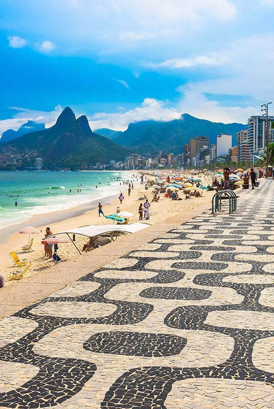

Morning in Rio de Janeiro
1. GO TO THE BEACH
In the morning, many people go to the beach to relax and enjoy the fresh air. You can walk on the sand, swim or watch the sunrise at Copacabana Beach or Ipanema Beach.


.jpg)

2. DO SOME SPORT
Rio is a very active city. In the morning, people like to run, play football or volleyball on the beach. It is a great way to start the day.
.jpg)


.jpg)
3. TAKE THE TRAIN TO THE TOP
To reach the statue (Christ the Redeemer), you can take the Corcovado Railway. The train goes through the forest and offers amazing views during the journey.


4. VISIT THE CHRIST
You can visit the famous Christ the Redeemer early in the morning. There are fewer tourists, and the view over the city is beautiful and peaceful.
.jpg)
5. HAVE BREAKFAST
After your activities, you can enjoy a Brazilian breakfast with coffee, fresh fruit such as an Açaí na Tigela and local food. It is simple but very tasty.
.jpg)


6. TAKE PICTURES
The morning light is perfect for photos. You can capture beautiful views of the city, the mountains and the ocean.


.jpg)
.jpg)